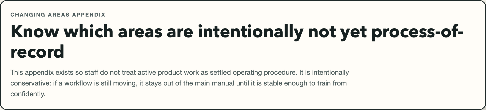
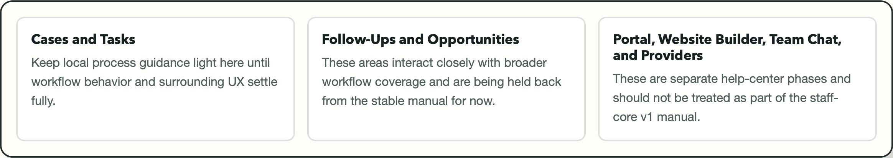

Changing Areas Appendix
Know which areas are intentionally not yet process-of-record
This appendix exists so staff do not treat active product work as settled operating procedure. It is intentionally conservative: if a workflow is still moving, it stays out of the main manual until it is stable enough to train from confidently.
What this page is for
Use this appendix to identify the product areas that are intentionally excluded from the stable staff manual. This keeps training material, SOPs, and screenshots from drifting ahead of the product's current level of stability.
Before you start
- Assume this appendix is conservative by design.
- Check with your admin or operations lead before building process around a deferred area.
- Use the stable manual for current training unless you have explicit local guidance otherwise.
Deferred areas right now
Cases and Tasks
Keep local process guidance light here until workflow behavior and surrounding UX settle fully.
Follow-Ups and Opportunities
These areas interact closely with broader workflow coverage and are being held back from the stable manual for now.
Portal, Website Builder, Team Chat, and Providers
These are separate help-center phases and should not be treated as part of the staff-core v1 manual.
Steps
- Identify whether your workflow is deferred. If it falls into Cases, Tasks, Follow-Ups, Opportunities, portal docs, website tools, team chat, or provider management, treat it as out of scope for the stable manual.
- Use stable alternatives when possible. If the work can be completed in People, Events, Donations, Dashboard, or Reports, use the stable guide for those areas.
- Confirm the live process locally. Ask your admin or operations lead for the current team-standard path before you train someone else on a deferred area.
- Avoid frozen screenshots. Do not create internal manuals or slide decks from changing screens unless the team explicitly accepts that they may go stale quickly.
- Feed back what you learn. Note repeated questions or unstable behaviors so the next documentation phase can target them intentionally.


What happens next
After you use this appendix, you should know whether to continue with the stable manual or stop and confirm a local process. That reduces the risk of teaching staff a workflow that changes underneath them.
Common mistakes
- Turning a changing workflow into a formal SOP too early.
- Reusing screenshots from a deferred area as if they are stable training material.
- Assuming "visible in navigation" means "fully documented and settled."
- Skipping local confirmation before training others on a deferred screen.
Related guides
Need help?
If your work depends on a deferred area, ask your admin or team lead for the current approved operating path before you proceed. That is the safest way to avoid training on a screen that is still moving.